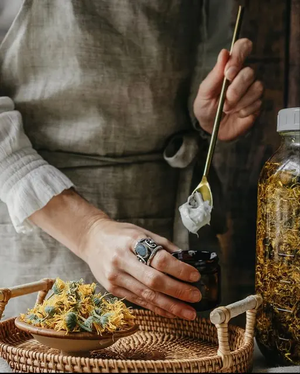
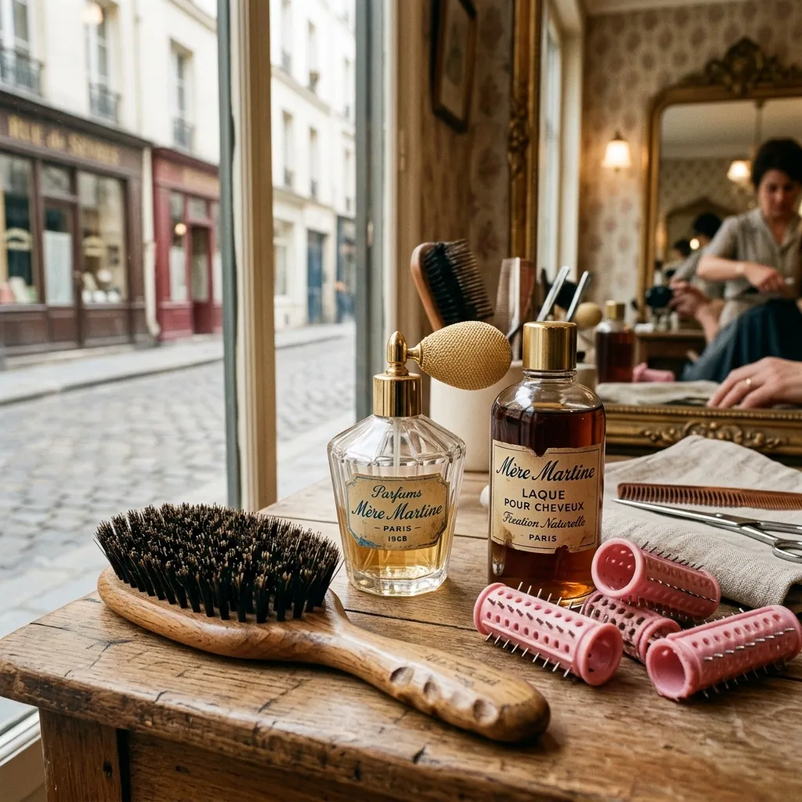

Des soins faits main,comme autrefois.
Huiles, savons au lait, baumes et brosses en poils de sanglier, préparés à la main dans l'Allier.
préparé à la main, en petits lots
Par besoin


L'atelier, au féminin.
Les plantes sont infusées, les beurres fondus au bain-marie, les savons coupés au fil. Rien n'est fait à la chaîne.

Les essentiels
Tous les soins
Cent coups de brosse, le soir.
Le poil de sanglier répartit le sébum des racines aux pointes. C'est le plus vieux soin des cheveux, et le moins cher : une brosse dure des années.
Les bienfaits de la brosse en sanglier
Le soir, pour les cheveux secs
- deux cuillères de bain d'huile sur les longueurs
- un foulard de soie pour la nuit
- cent coups de brosse au réveil
- un seul shampoing, doux
Mère Martine
Coffrets cadeaux
Coin des affairesLe carnet de Mère Martine
Tous les conseils
Qui est Mère Martine ?
Une grand-mère comme on en a tous eu : un savon au lait sur le rebord de l'évier, une huile pour les cheveux le dimanche, cent coups de brosse avant de dormir. Ses gestes sont devenus nos recettes.
Mère Martine
Notre histoireFabriqué dans l'atelier du Père Lucien.
Mère Martine partage l'atelier de Teillet-Argenty, les savons saponifiés à froid de Gisèle et la rigueur de formulation de Cyril.
Le Père Lucien